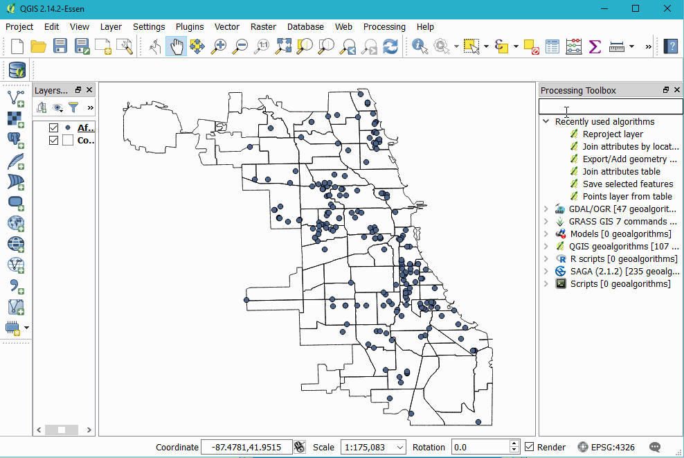

Selecting and Modifying Data
Selecting Data by 'Hand'
ESPG etc
Select by Expression
Intersections, etc
Modifying Attribute Data
Everything in it's right place
Geoprocessing!
Buffer Union
Joining Data By Attribute
Using Layer Properties

Using the Toolbox

Joining Data By Location (Spatial Join)
